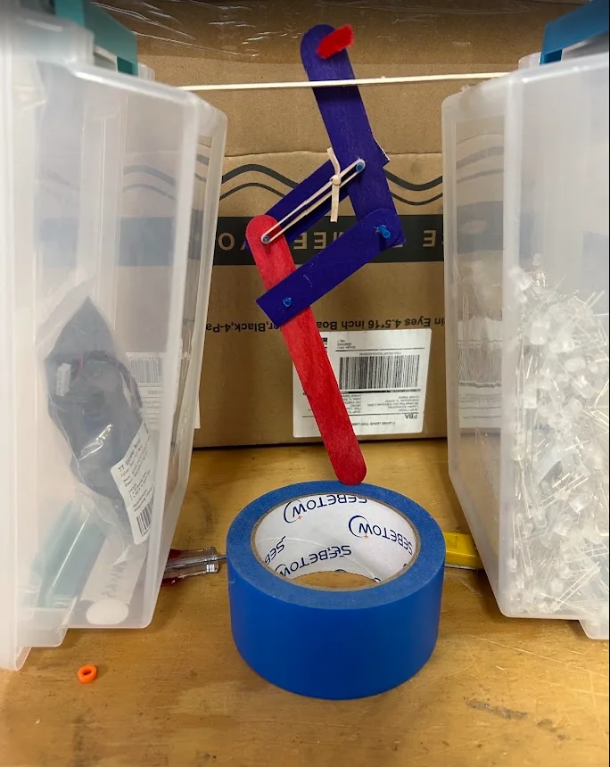
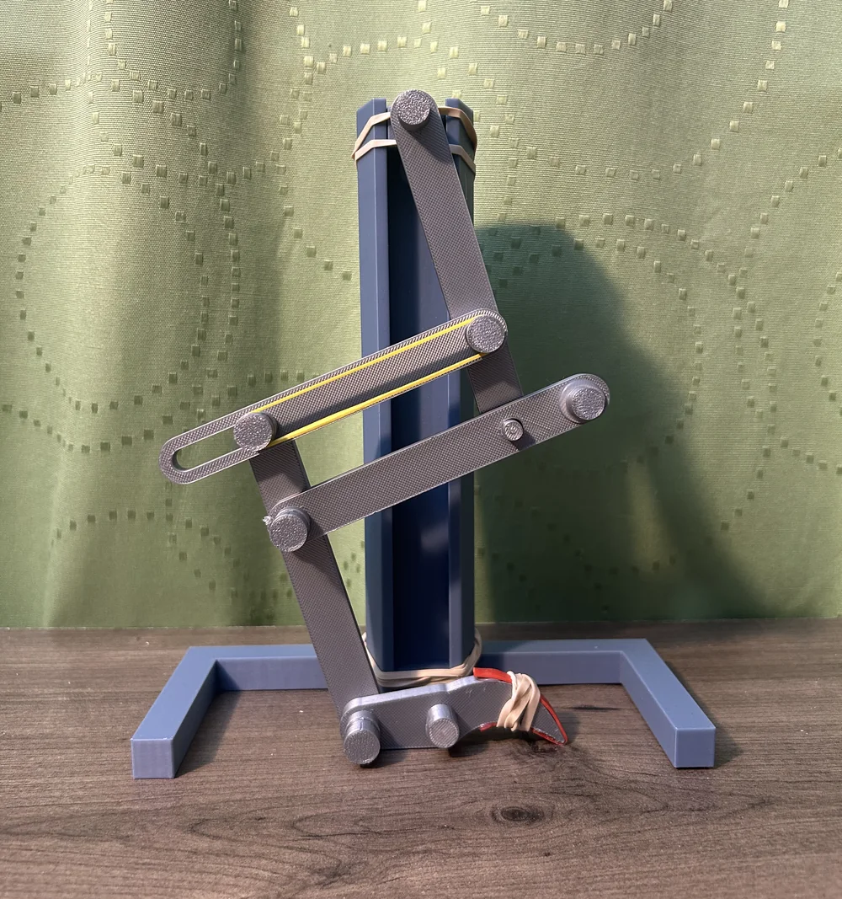
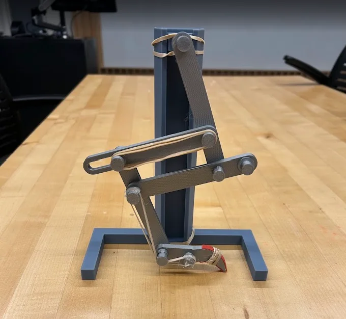
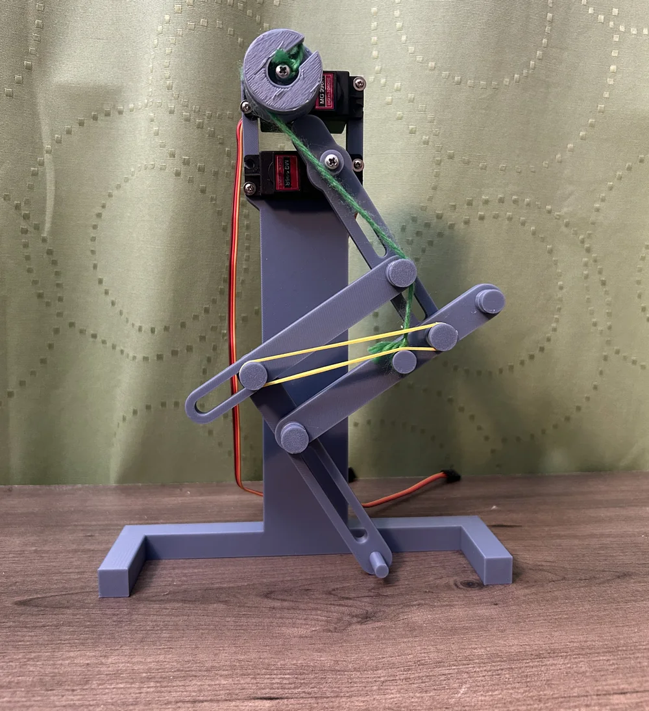
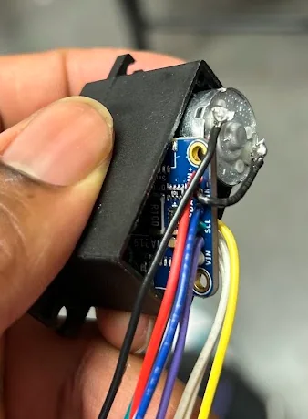
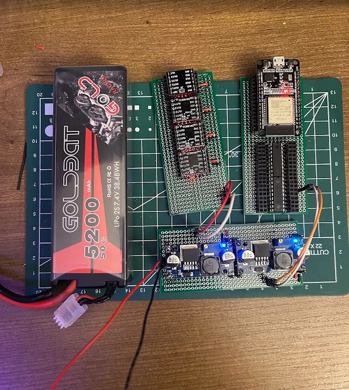

01The goal
I want a quadruped that moves more like an animal than a typical hobby robot. That means two things. The legs should copy how a cat's hind limb works, with a femur, tibia and foot, and with elastic elements doing the job of muscles and tendons. And the joints should know how much force they're applying, so the robot can feel the ground instead of stepping blindly.
The project has a mechanical track (the leg) and an electronics track (the joints and the control system). I'm iterating on both in parallel.
02Leg versions
- V1Popsicle-stick proof of concept
- V2Printed biomimetic leg with elastic muscles, no motors
- V3Servos added, yarn tendon drives the tibia
- V4 · nextStiff linkage with real springs
V1: proof of concept
A quick build from popsicle sticks and a rubber band, just to check that the basic linkage would move the way I expected.

V2: elastic muscles and passive standing
V2 was the first printed leg and the first to test how a biomimetic leg would really behave. It has no motors. Rubber bands stand in for muscles: one acts as the gastrocnemius (the calf muscle) and others flex the toes and claws.
This version is where I started exploring passive energy storage. The idea is that in the resting posture, the elastics (eventually springs) hold the robot up with no load on the motors. The motors then have to work harder to bend the leg, but a quadruped spends a lot of its time standing, so I think the trade is worth it.


03V3: tendon drive
V3 added servo motors and made two big changes:
- A tendon instead of a bar. A yarn tendon pulls the tibia remotely, replacing the stiff bar linkage. The yarn gives the leg a smaller profile, but it raises the problem of transmitting tension along a non-linear path. I'm doing research on a similar subject at the CRB lab at Northwestern, so I may come back to this design later.
- Moving the calf attachment. In a real cat the gastrocnemius attaches to the femur. I moved its upper attachment to the tibia because testing showed it was a little more efficient there. I still need to test it across the foot's full range of motion to know whether that advantage is real or just a leftover of the first V3 layout.
V3 through its range of motion

The problem it revealed
Testing showed a weakness in this exact setup. Past a certain angle, the tendon goes slack, and from then on the lower leg is controlled entirely by the rubber-band gastrocnemius. A tendon can only pull, so the motor loses control of the joint in that part of the range.
04Current-sensing joints
The joints use modified MG996R servos. I gutted a test servo down to its motor and potentiometer and reworked the inside to fit an INA219 current sensor. Each joint gets its own sensor, and each knee and ankle pair shares a DRV8833 H-bridge.
The idea comes from my ME 433 haptic paddle. Motor torque is proportional to current, so a joint that knows its current can estimate how much force it's applying. That should make for a smoother gait, and it lets the robot sense contact with the ground instead of stepping blindly.


Problem: a short inside the servo
In the first modified servo, a short kept the current sensor from working, even after I insulated every conductive surface I could find. Fitting the sensor into the servo case cleanly is still an open problem.
On the software side, I wrote a low-pass filter on a Raspberry Pi Pico in CircuitPython to smooth the noisy potentiometer readings, which removed the servo jitter on the test leg.
05From one brain to many
The power system is a 7.4 V 5200 mAh LiPo feeding two buck converters: 6 V for the H-bridges and servos, and 5 V for the logic.
Version 1: one central controller
Hit a hardware limitESP32 (Bluetooth) ├─ MCP23008 GPIO expander ├─ MCP23008 GPIO expander └─ I²C bus ×2 → INA219 ×8 max
Version 2: a brain in every limb
In progressCentral brain · Pico 2 W (leader) ├─ Leg 1 · Pico 2 W → hip, knee, ankle ├─ Leg 2 · Pico 2 W → hip, knee, ankle ├─ Leg 3 · Pico 2 W → hip, knee, ankle ├─ Leg 4 · Pico 2 W → hip, knee, ankle └─ Arm · Pico 2 W
For version 1, I put two MCP23008 GPIO expanders on an ESP32. That gave me enough pins for every joint and future sensors, plus Bluetooth. The problem was the current sensors: the INA219 boards I used only offer four I²C addresses, and four addresses on each of two buses caps the system at eight sensors. The legs alone need twelve, before the arm.
Version 2 gives each leg, and the arm, its own Pico 2 W. A central Pico 2 W coordinates them in a leader–follower setup. Each limb only needs three sensors on its own bus, so the address limit disappears, and adding a limb or a sensor later doesn't touch the rest of the system. It's a little like an octopus, whose arms each have their own cluster of neurons. I'm also planning XT connectors so each leg can be unplugged from power on its own.
06What's next
- A tail. A planned addition, and where the name Chimera comes from.
- Leg V4. Most likely a stiff bar linkage again, but with real springs for energy storage instead of rubber bands. That avoids the slack-tendon problem.
- Servo modification. Solving the short so the current sensor fits reliably inside the servo case.
- Distributed control. Building the per-limb Pico 2 W controllers and the central brain.